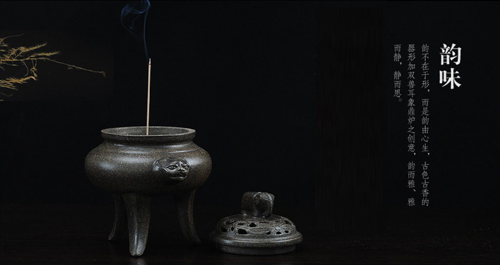

香道 香炉
香道与茶道和花道并称为三雅道。“花道”“茶道”“香道”都与中国剪不断理还乱，日本将之化为生活的艺术，从贵族拓展到平民生活的细节中，至今仍生机勃勃，而在我国，由于传承和历史的原因旁落，令人遗憾，若寻访这些雅道还要到邻邦去。 一般认为，唐朝鉴真和尚赴日时，不仅向日本传播佛教，还带去了品香文化。在奈良时代，香主要用于佛寺礼仪。当时的熏香方法叫烧香献香。当时还用于宫廷礼仪、熏衣或令室内芳香。在和平年代，香料悄然进入贵族的生活。随着民族文化的兴起，烧香成为贵族生活中不可或缺的一部分。他们根据不同的时间和场合选择不同的香品。当时，香的主要用途仅限于熏物。将各种香木粉混合，再加入炭粉，最后与蜂蜜混合凝固，即所谓的“熏物合”。
所谓香道，是以“乐香”为道教艺术的一种高雅艺术。通过眼睛、手摸、鼻闻等形式，我们可以充分领略和了解这些珍贵的香料。通过训练，我们可以使心灵清净，不断追求“静、雅、美、真、和”的意境。它可以让人们追忆过去，想起圣贤，沉浸在美妙的寂静中。香道讲究近观不语。随着轻烟的升起，人们可以感悟生命的意义。”“香道”和“茶道”就像一对孪生姐妹。他们还谈论“和静清寂”。古人常将斗香、品茶、绘画和插花结合起来，创造出丰富的艺术趣味。
紫部在其代表作《源氏物语》中写道，光源氏与夫人们在红梅香季举行了一场比赛。家家户户按秘方烧香。他们之所以选择在雨天熏香，是因为香味在潮湿的空气中容易挥发。评完香展后，宴会开始，香的味道飘向空中。在美妙音乐的背景下，每个人都陶醉在喜悦中。
